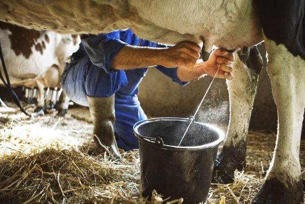

Em resumo, trata-se de um leite que passa por um processo térmico capaz de eliminar toda microbiota, mas que é, em seguida, colocado em uma embalagem esterilizada. Não dá pra separar as duas coisas. Leite limpo em embalagem suja ou leite sujo em embalagem limpa não funciona.

Segundo a Confederação Nacional da Agricultura e Pecuária (CNA), a média é de R$ 0,77 por litro de leite longa vida. Em alguns estados, o valor pago aos produtores pode chegar a R$ 0,60 por litro, mas o consumidor pode acabar pagando, por esse mesmo leite, até mais de R$ 3.